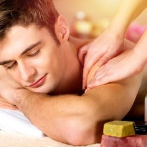

အနှိပ်ခံခြင်းဖြင့် ဖြစ်လာနိုင်သည့် ကောင်းကျိုး ဆိုးကျိုးများ

ယနေ့ခေတ်လူနေမှုပုံစံကို ပြောရရင် အများစုဟာ ကိုယ်လက်လှုပ်ရှားမှုနည်းပြီး အထိုင်များလာကြပါတယ်။
ဖုန်းတွေ၊ အင်တာနက်တွေ ပေါပေါများများပေါ်လာပြီး နောက်ပိုင်းမှာ ပိုအထိုင်များလာကြပါတယ်။
အထိုင်များလာတာနဲ့အမျှ ကြွက်သားတွေ ညောင်းညာကိုက်ခဲမှုဝေဒနာကို ခံစားလာကြရပါတယ်။
ညောင်းညာကိုက်ခဲမှုကို သက်သာအောင် အများစုအနေနဲ့ အနှိပ်ခံလေ့ရှိကြပါတယ်။
အခုခေတ်နောက်ပိုင်းမှာ မျက်မမြင်အနှိပ်၊ အမျိုးသမီးသီးသန့်အနှိပ်ခန်း၊ အမျိုးသားအနှိပ်ခန်း စသဖြင့် အနှိပ်ခန်းတွေဟာလည်း တဖြည်းဖြည်းနဲ့ ပေါများလာပါတယ်။
နှိပ်နယ်ပေးခြင်းကို အင်္ဂလိပ်လို massage သို့မဟုတ် Acupressure လို့ခေါ်ပါတယ်။
အနှိပ်ပညာဟာ မြန်မာ့ရိုးရာပညာရပ် မဟုတ်ပါဘူး။ မဏိပူရကသည်းကနေ မြန်မာနိုင်ငံဆီပျံ့နှံရောက်ရှိလာတာဖြစ်နိုင်ကြောင်း ယူဆရပါတယ်။
ဘာလို့လဲဆိုတော့ ရာဇဝင်မှတ်တမ်းတွေအရ ဘိုးတော်ဘုရားလက်ထက်လောက်မှာ မဏိပူရကသည်းတိုင်းပြည်က မင်းသမီးတပါးကို မြန်မာ့မိဖုရားအဖြစ်ဆက်သတဲ့အခါမှာ ထိုမင်းသမီးနဲ့အတူ အနှိပ်အတတ်အထူးကျွမ်းကျင်တဲ့ ကသည်းအနှိပ်ဆရာတဦး ပါလာကြောင်း သိရပါတယ်။
ထိုကသည်းအနှိပ်ဆရာကတဆင့် အနှိပ်ပညာဟာ ရတနာပုံနန်းတွင်းကနေ မြန်မာတနိုင်ငံလုံးကို တစတစပျံ့နှံသွားတာဖြစ်နိုင်ပါတယ်။
ရှေးခေတ် ရှင်ဘုရင်တွေကိုယ်တိုင်လည်း အနှိပ်ခံလေ့ရှိကြပါတယ်။
စည်သူမောင်မောင်ကျော်ရေးသားအပ်သော ရတနာပုံမြို့တည်နန်းတည် စာတမ်းမှာ နံနက် ၆ နာရီ ခန့်အချိန် ဘဝရှင်မင်းတရာကြီး စက်တော်ခေါ်ရာမှ နိုးတော်မူလျှင် ပုဏ္ဏားဝန်ဟဇနနဲ့တကွ အသင့်စောင့်နေသော ကသည်းအနှိပ်တော် ရှစ်ယောက်တို့က အနှိပ်ဆက်ရသည်ဟု ရေးသားထားပါတယ်။
နှိပ်တယ် ဆိုတာဟာ လက်ခြေထောက်ဒူးတံတောင်တွေ ရံဖန်ရံခါ အထူးပြုလုပ်ထားတဲ့ကိရိယာတွေကိုသုံးပြီး သတ်မှတ်ထားတဲ့ နှိပ်ကွက်တွေအတိုင်း ခန္ဓာကိုယ်ရှိနေရာများအား အားအသင့်တင့်ချိန်ဆသုံးကာ ဖိတာ၊ပွတ်တာ၊ဆုပ်နယ်တာ တွေလုပ်ပေးခြင်းဖြစ်ပါတယ်။
အနှိပ်ပညာဟာ နှယ်နှယ်ရရ ပညာမဟုတ်ပါဘူး။
ရှေးပညာရပ်ကျမ်းတွေမှာ အနှိပ်ပညာသင်လိုသူဟာဆိုရင် အရင်ဆုံး ခန္ဓာကိုယ်မှာ အရိုးကြီးအရိုးငယ်တွေ၊ အကြောမကြီးအကြောငယ်တွေ အသားတုံးအသားတစ် (ကြွက်သား၊ အရွတ်)တွေ ဘယ်လိုတွေတည်ရှိနေလဲဆိုတဲ့ ဒီခေတ်အခေါ် ခန္ဓာဗေဒလိုမျိုးကို အရင်လေ့လာရကြောင်း
ထို့နောက် ထိုအရာတွေအချင်းချင်း တခုခုနဲ့တခု ဘယ်လိုဆက်သွယ်နေလဲဆိုတာကို လေ့လာရကြောင်း
အဲ့နောက်မှာတော့ အဲ့ဒါတွေတခုချင်းစီဟာ ခန္ဓာကိုယ်ရဲ့ ဘယ်လိုအရာတွေလုပ်ဆောင်ရာမှာ အရေးပါတယ်။ ဘယ်ဟာတွေပျက်ရင် ဘယ်လိုဝေဒနာတွေဖြစ်မယ်၊ ဝေဒနာသက်သာအောင် ဘယ်နေရာကို ဘယ်လိုနှိပ်ရတယ်စသဖြင့်ကို လေ့လာသင်ယူရကြောင်း သိရပါတယ်။
ဒီဘက်ခေတ်တချို့သူတွေထင်တာကကျ နှိပ်တယ်ဆိုတာဟာ လွယ်လွယ်လေးပါ။
သူများနှိပ်တာကို တခေါက်လောက်လိုက်ကြည့်ပြီး ခန္ဓာကိုယ်နေရာအနှံ့အားထည့် နာနာနှိပ်နိုင်ရင် နှိပ်တတ်ပြီလို့ ထင်တတ်ကြပါတယ်။
ဒီဘက်ခေတ်မှာ ညောင်းညာတဲ့သူတွေ များလာပြီး အနှိပ်ခံချင်တဲ့သူတွေလည်း များလာပါတယ်။
အနှိပ်လုပ်ငန်းဟာလည်း ဝင်ငွေကောင်းလာ ငွေရချောင်လာတဲ့ လုပ်ငန်းဖြစ်လာပါတယ်။
ဒီတော့ သူများနှိပ်တာ နှစ်ခါသုံးခါလောက်လိုက်ကြည့်ပြီး နောက် ကိုယ့်ကိုကိုယ် အနှိပ်ဆရာအဖြစ်ခံယူကာ နှိပ်စားကြတဲ့သူတွေလည်း မနည်းပါဘူး။
အဲ့လိုလူတွေနဲ့နှိပ်မိတဲ့အခါ နာလေထိလေဆိုပြီး တအားနှိပ်တာ၊ နှိပ်ကွက်အတိုင်းမဟုတ်ဘဲ စိတ်ထင်သလိုနှိပ်တာတွေကြောင့် အညောင်းအညာမပြေဘဲ ကြွက်သားနာကျင်မှု ပိုဆိုးလာတာ၊ အရိုးအဆစ်ရောင်တာ၊ အဆစ်လွဲတာ၊ အရိုးကျိုးတာမျိုးတွေဖြစ်နိုင်ပါတယ်။
ဖြစ်တဲ့သတင်းတွေလည်း မကြာခဏကြားရပါတယ်။
တချို့ဆို အာရုံကြောတွေထိခိုက်ပျက်စီးပြီး ကိုယ်လက်တသက်လုံးမလှုပ်နိုင်တော့သည်အထိ ဖြစ်တာ မျိုးတွေရှိပါတယ်။
ဒါ့အပြင် အူအတက်ပေါက်တာ၊ သားအိမ်ထဲရေအိတ်၊သွေးလုံးတည်နေတာကို မသိဘဲ ဗိုက်ကို နှိပ်တာကြောင့် အသက်အန္တရာယ်ဖြစ်တာမျိုးတွေလည်းရှိပါတယ်။
တကယ်နှိပ်တတ်တဲ့ အနှိပ်ပညာရှင်နဲ့နှိပ်ရင်တော့ ဆိုးကျိုးမဖြစ်သလောက်ရှားပြီး ကောင်းကျိုးတွေပဲရတာများပါတယ်။
အနှိပ်ပညာရှင်နဲ့အနှိပ်ခံခြင်းဖြင့် အကြောတက်တာ၊ ကိုယ်လက်တောင့်တင်းညောင်းကိုက်တာ၊ ကိုက်ခဲတာတွေကို သက်သာသွားစေနိုင်ရုံသာမက စိတ်ဖိစီးမှုများနေတာ၊ စိတ်သောကများနေတာ၊ ပင်ပန်းနွမ်းနယ်နေတာတွေကိုပါ လျော့ပါးသက်သာစေနိုင်ပါတယ်။
စိတ်ခံစားမှုကိုလည်း ကြည်လင်ကောင်းမွန်စေနိုင်ပါတယ်။
ဒါ့အပြင် လေ့လာမှုတွေအရ နှိပ်ခြင်းဖြင့် လေထိုးလေနာရောဂါကို သက်သာပျောက်ကင်းစေနိုင်ပြီး အပေါ်သွေးပေါင်ချိန်များတာကိုလည်း အတိုင်းအတာတခုထိ လျော့ပါးစေနိုင်ကြောင်းသိရပါတယ်။
ခြုံပြောရရင်တော့ အနှိပ်ခံတာဟာ တကယ်တတ်တဲ့သူနဲ့ဆိုရင် ကောင်းကျိုးများပြီး တကယ်မတတ်တဲ့သူနဲ့ဆိုရင်ကျ ဆိုးကျိုးတအားများပါတယ်။
ဒါကြောင့် အဆုံးသတ်အနေနဲ့မှာချင်တာက အနှိပ်ခံမယ်ဆိုရင် တကယ်ကျွမ်းကျင်တဲ့သူဟုတ်မဟုတ်သေချာစုံစမ်းပြီး တကယ်ကျွမ်းကျင်သူနဲ့သာ အနှိပ်ခံသင့်ကြောင်း အကြံပေးချင်ပါတယ်။
Source-Dr 528